Раскрой гофролиста
Corrugated cutting
Подбор карт раскроя, учет форматов, сроков, марок картона и технологических ограничений.
Cutting maps, board formats, due dates, grades and production constraints.
Комплексное решение для индустрии тары и упаковки
Integrated software suite for packaging engineering
Один рабочий комплекс для расчета гофрокартона, изделий, ящиков, раскроя, транспортных пакетов, поддонов, контейнеров, ГОСТов, сырья и производственных сценариев.
One desktop suite for corrugated board, products, boxes, cutting plans, transport packages, pallets, containers, standards, raw materials and production calculations.
ПОЯС объединяет инженерные расчеты упаковки с производственными справочниками: клиенты, изделия, типы ящиков, ГОСТы, сырье, контейнеры, поддоны и транспортные нормы доступны из одного рабочего стола.
POJAS combines packaging engineering calculations with production reference data: customers, products, box types, standards, raw materials, containers, pallets and transport rules are available from one desktop.
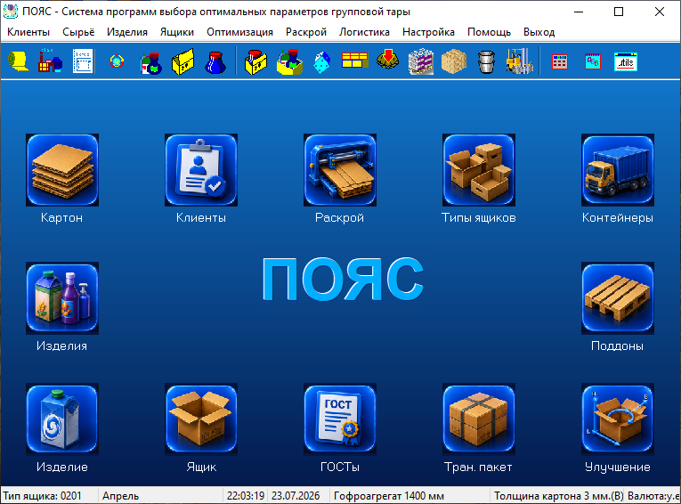
Модули закрывают полный цикл упаковочного расчета: от изделия и ящика до поддона, контейнера, норм отгрузки и отчетов.
Modules cover the full packaging calculation flow: from product and box to pallet, container, shipment norms and reports.
Подбор карт раскроя, учет форматов, сроков, марок картона и технологических ограничений.
Cutting maps, board formats, due dates, grades and production constraints.
Свободная укладка, решетки, зазоры, ориентации изделий и поиск подходящих типоразмеров ящиков.
Free packing, dividers, clearances, product orientations and suitable box sizes.
Справочники ГОСТов, расчет параметров гофроящика и контроль ограничений по упаковке.
Standards reference data, corrugated box parameters and packaging constraints.
Расчет укладки ящиков на поддон, контейнеров и транспортных схем с учетом габаритов и массы.
Box-to-pallet, container and transport layouts with dimensions and weight limits.
Справочники марок, сортов, производителей, складских остатков и расчет потребности для заказа.
Grades, manufacturers, stock balances and material demand for orders.
Расчет транспортных пакетов, высот, норм отгрузки и вспомогательных производственных параметров.
Transport packages, heights, shipment norms and supporting production parameters.
Как снизить себестоимость продукта за счёт упаковки?
И чем в этом может помочь программа «ПОЯС»?
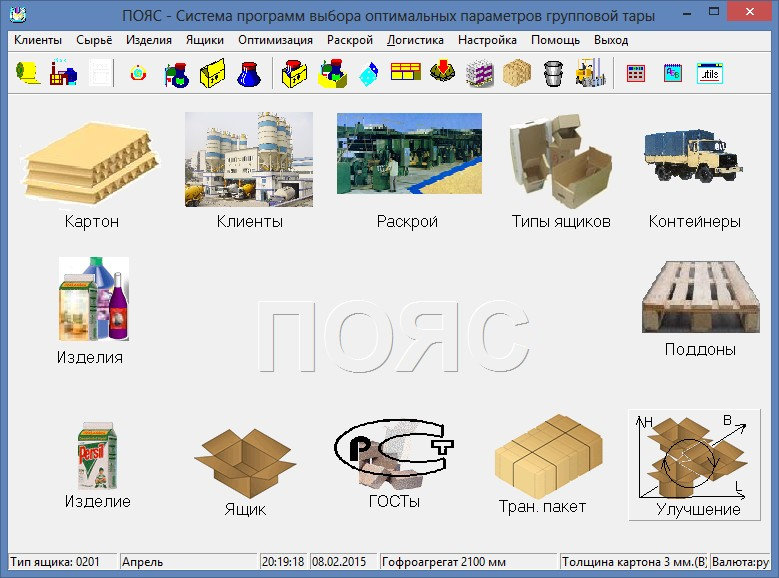
Стоимость индивидуальной упаковки может быть снижена за счёт выбора оптимальных размеров изделия при сохранении вместимости.
В программе «ПОЯС» реализованы модули для оптимизации индивидуальной упаковки для следующих типов изделий:
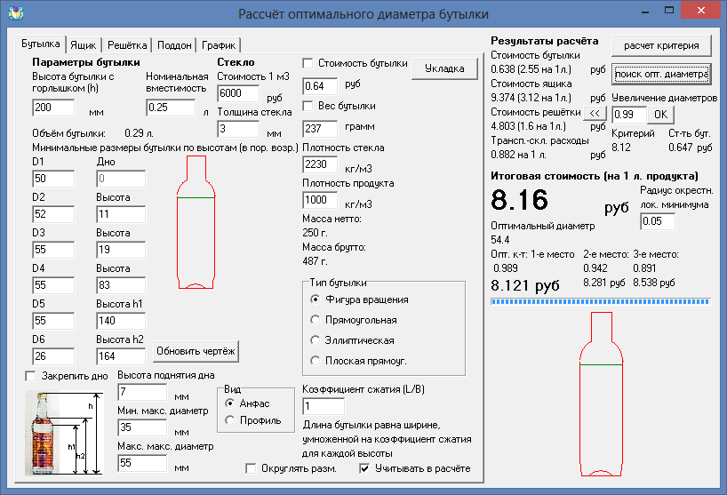
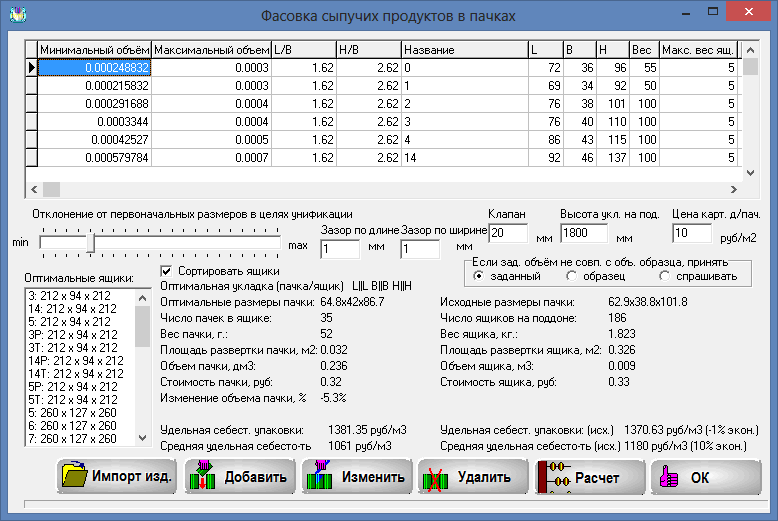
Для перевозки от производителя к потребителю товар упаковывается в транспортную тару. Одним из наиболее распространённых видов транспортной тары является ящик из гофрированного картона.
Для каждой конструкции гофроящика существует оптимальное соотношение размеров ящика (длины, ширины и высоты), при котором достигается минимум площади развёртки. Чем ближе соотношение размеров исходного ящика к оптимальному, тем более экономичной является рассматриваемая конструкция.
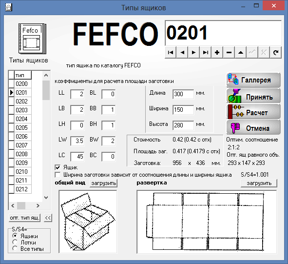
Программа «ПОЯС» позволяет находить оптимальную укладку изделий различных типов в заданный ящик.
При этом изделия могут подвергаться деформации (как за счёт сжатия содержимого, так и за счёт растяжения индивидуальной упаковки).
Возможна укладка с разделительными решётками или перегородками. Изделия можно укладывать плашмя, ставить на ребро или на торец (кантовать).
Изделия могут вставляться друг в друга с выступом на определённую величину.
При необходимости деформацию, кантование, решётки и неподходящие виды укладки можно отключить.
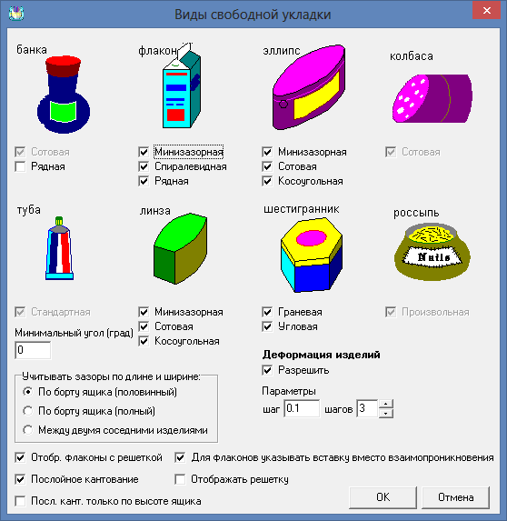
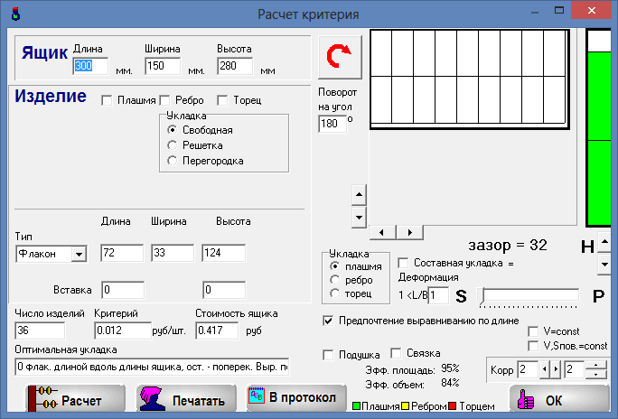
При подборе оптимального ящика программа «ПОЯС» учитывает обрезной отход. Его снижение позволяет значительно снизить себестоимость транспортной тары.
Если используется несколько форматов листа, программа подберёт оптимальный.
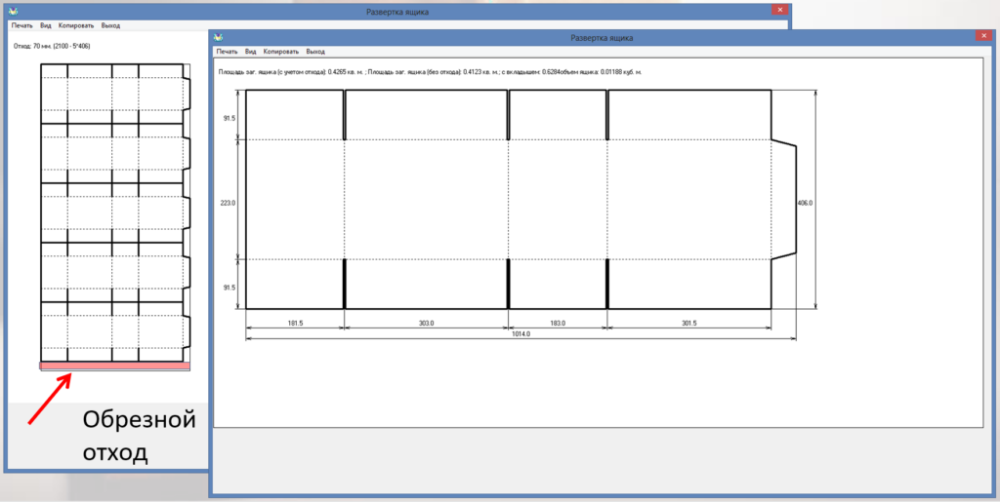
В программе «ПОЯС» возможен подбор ящика из ГОСТов, представляющих из себя наборы размеров.
При этом вы можете завести в базу данных свой «ГОСТ», в который внесёте размеры своих готовых ящиков, имеющихся на складе или ящиков для которых у вас есть в наличии вырубные штампы.
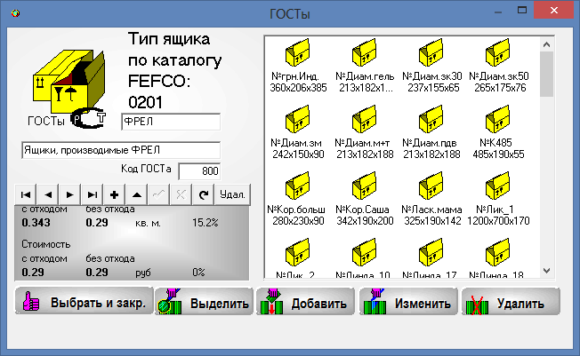
Транспортные ящики с готовой продукцией в большинстве случаев перевозятся на поддонах. За счёт оптимизации укладки ящиков на поддон можно снизить число перевозимых поддонов и существенно сократить транспортные расходы.
Хорошая укладка также препятствует рассыпанию ящиков из-за тряски во время перевозки.

Если видов изделий много, то значительную экономию можно получить за счёт снижения числа типоразмеров ящиков. Ведь один и тот же ящик можно использовать для разных изделий.
Это позволяет сэкономить на проектировании ящика, на создании вырубного штампа, на перенастройке оборудования и на учёте упаковочной продукции.
Программа «ПОЯС» позволяет группировать изделия по ящикам как из ГОСТов или заданных наборов, так и произвольных размеров. Группировка возможна как в автоматическом, так и в ручном режиме при помощи специального модуля «Анализатор».
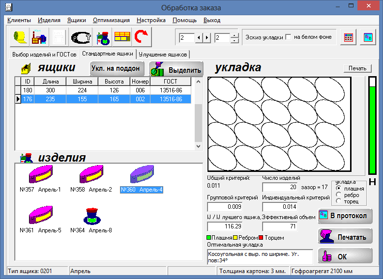
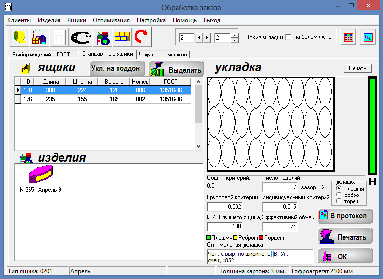
В данном примере для 6 изделий фирмы «Апрель» найдены 2 ящика из ГОСТа.
Модуль «Анализатор» позволяет анализировать совместимость ограничений на укладку изделий и вручную формировать группы изделий.
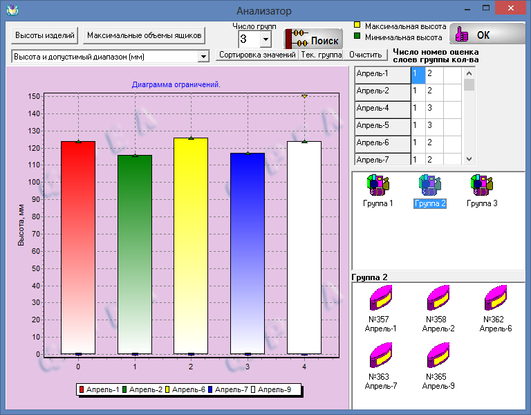
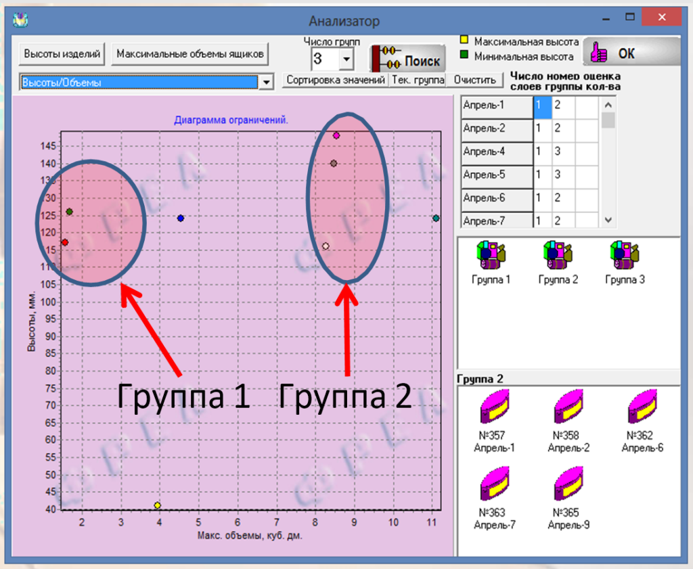
Принимая за основу ящик из ГОСТа, программа «ПОЯС» позволяет улучшить его за счёт изменения размеров.
В качестве критерия принимается стоимость транспортной тары на единицу изделия, в неё упакованного.
Найденное решение можно изменять вручную, наблюдая как при этом изменяется укладка (сразу, в реальном времени). Таким образом при расчёте можно сразу одновременно оптимизировать укладку ящиков на поддон.
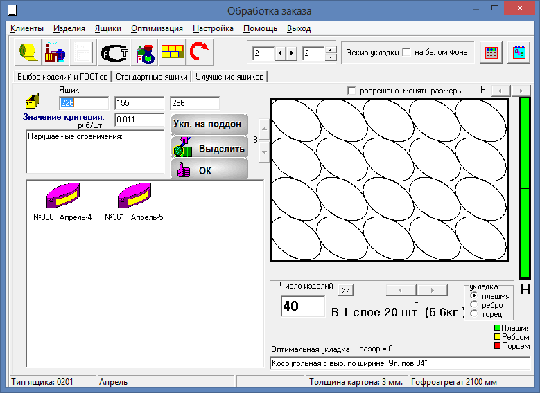
Ящики на поддонах погружают в контейнер: железнодорожный вагон, трюм корабля или кузов автофургона. Реже ящики укладывают в контейнер без поддонов. Оптимальная укладка ящиков в контейнер позволяет снизить число необходимых контейнеров или число перевозок, что даёт существенную экономию на транспортировке продукции.
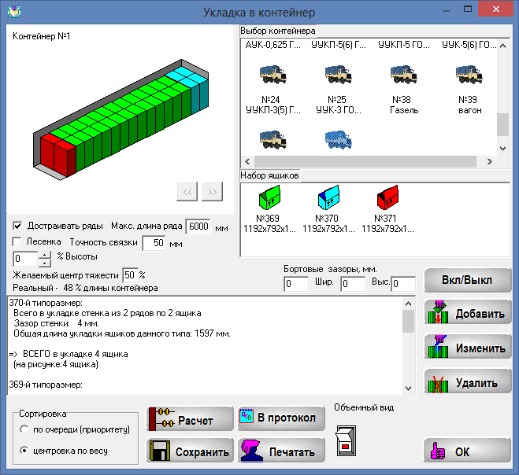
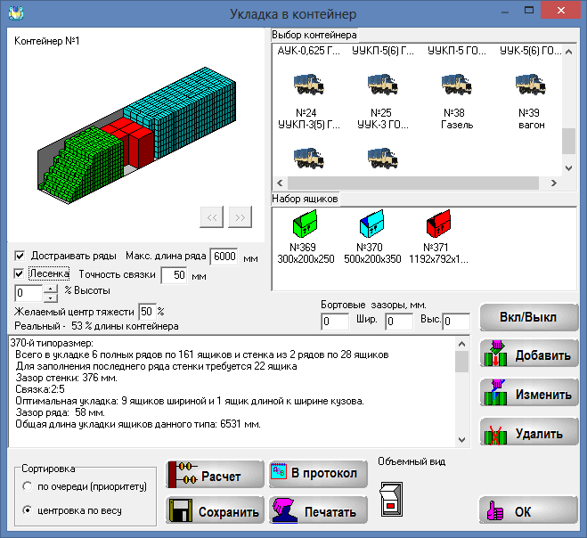
При отгрузке готовых ящиков в сложенном виде клиенту возникает задача формирования транспортного пакета.
Ящики увязывают в пачки, и за счёт оптимального выбора числа ящиков в пачке можно добиться хорошего заполнения контейнера по высоте и выровнять количество заготовок на поддонах, чтобы последний поддон не был полупустым.
Если транспортная тара идёт в комплекте (например, ящик, решётка в сборе, прокладка), то программа позволяет рассчитать норму отгрузки комплектов на контейнер. Это необходимо для определения количества потребных контейнеров.

При изготовлении заготовок гофроящиков и других изделий из гофрокартона за счёт рационального раскроя полотна можно существенно снизить обрезной отход.
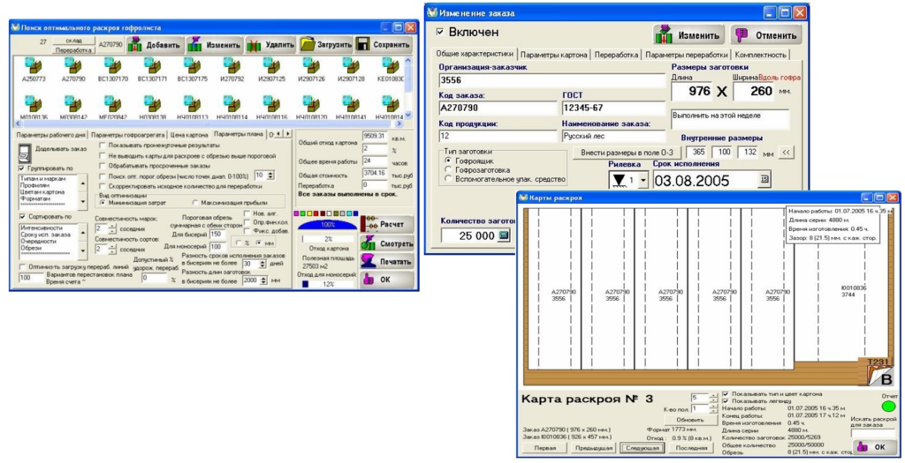
Программа «ПОЯС» позволяет сформировать план работы гофроагрегата с учётом рационального раскроя заготовок на полотне.
После изготовления на гофроагрегате заготовки поступают на перерабатывающие линии.
Программа «ПОЯС» позволяет сформировать план работы гофроагрегата с учётом рациональной загрузки перерабатывающих линий. Это позволяет избежать их простоя в работе.
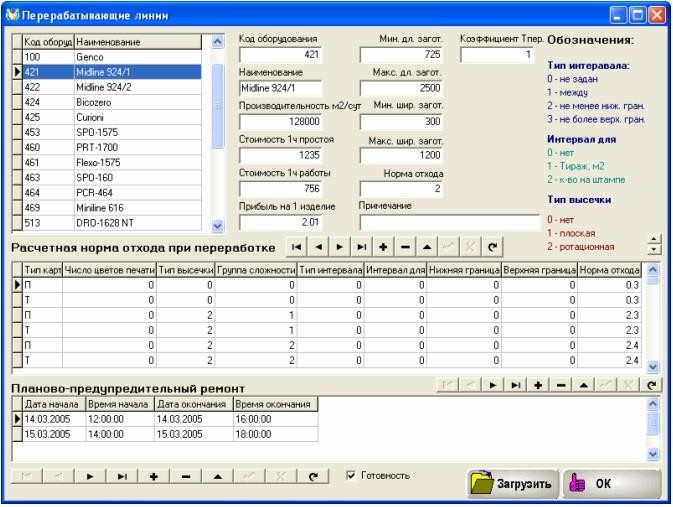
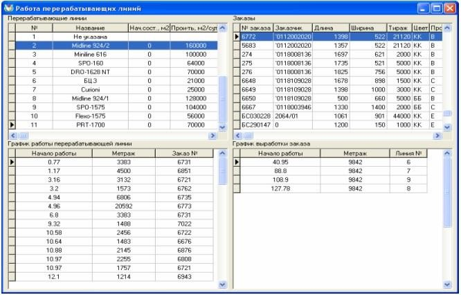
Программа «ПОЯС» позволяет рассчитать предельную нагрузку на ящик заданных размеров, и выбрать марку гофрокартона.
Правильный выбор марки гофрокартона для изготовления ящика позволяет с одной стороны не допустить излишних расходов на сырьё, из-за завышенной прочности ящика, а с другой стороны не допустить разрушения ящика, и порчи груза из-за заниженной прочности.
Условия хранения и перевозки ящика можно задать не постоянными, а случайными величинами с нормальным распределением: с известными средним значением и стандартным отклонением.
В этом случае предельная нагрузка определяется серией статистических испытаний.
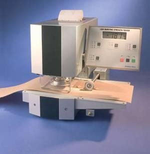
Программа «ПОЯС» позволяет решать и обратную задачу: определение количества ящиков в штабеле для заданной марки гофрокартона:
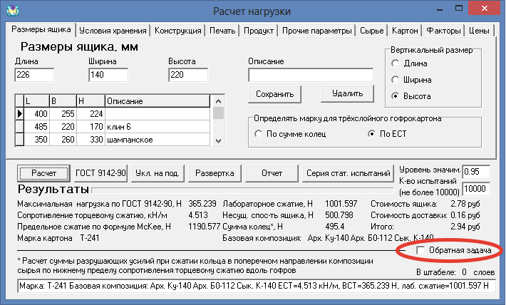
В программе «ПОЯС» реализована возможность удобного использования ГОСТ 9142-90:
Также есть реализация ГОСТ 9142-90 в виде отдельной программы.
Программа позволяет рассчитывать длину резательных и биговальных ножей на штампе как для стандартных четырёх-клапанных ящиков, так и для ящиков произвольной конструкции.
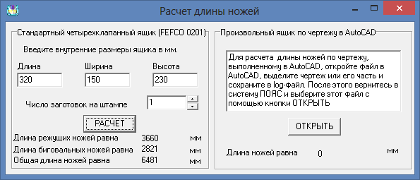
В программе «ПОЯС» имеется специальный модуль для построения эскиза самосборной решётки.
Программа позволяет также рассчитать оптимальную укладку решёток в сборе на поддон.
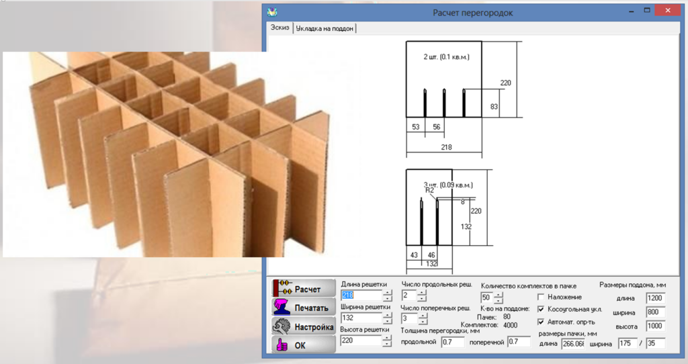
Для раскроя бобины бумаги или картона на ПРС в программе «ПОЯС» предусмотрен отдельный модуль:
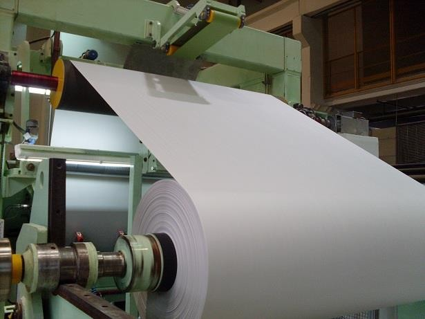
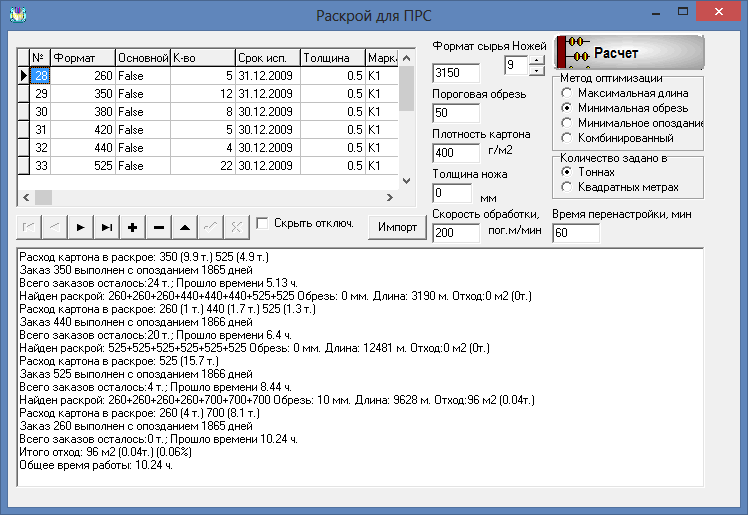
Программа позволяет построить план работы бобинорезки с учётом рационального раскроя рулонов:
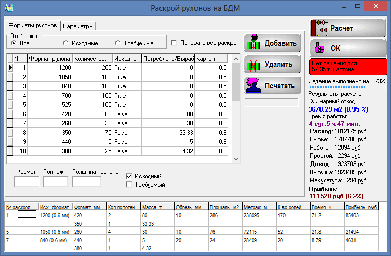
Программа позволяет построить план работы ротационных станков
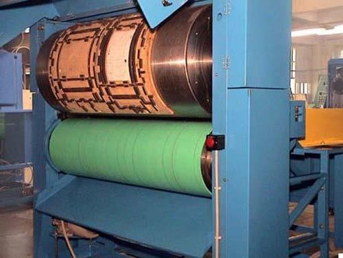
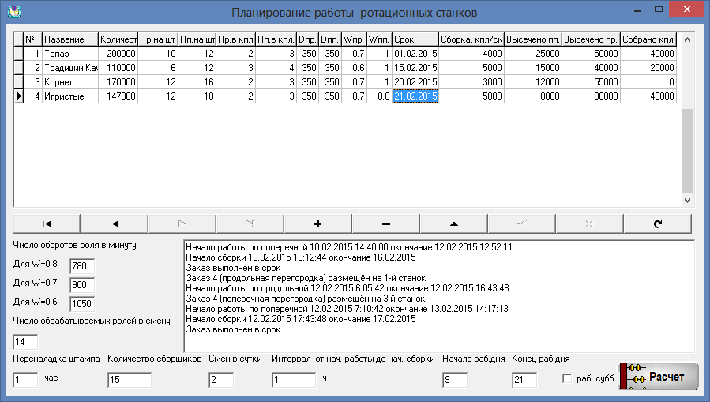
Программа «ПОЯС» позволяет построить план работы КДМ по заданному пакету заказов:
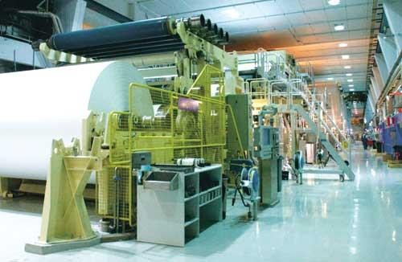
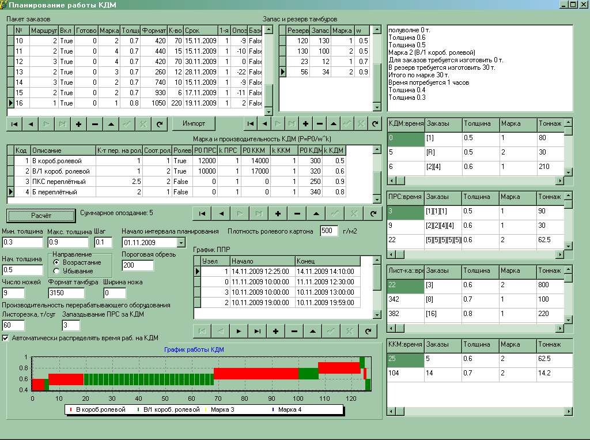
Программа позволяет рассчитать коэффициент гофрирования, необходимый для определения потребного количества бумаги для гофрирования.
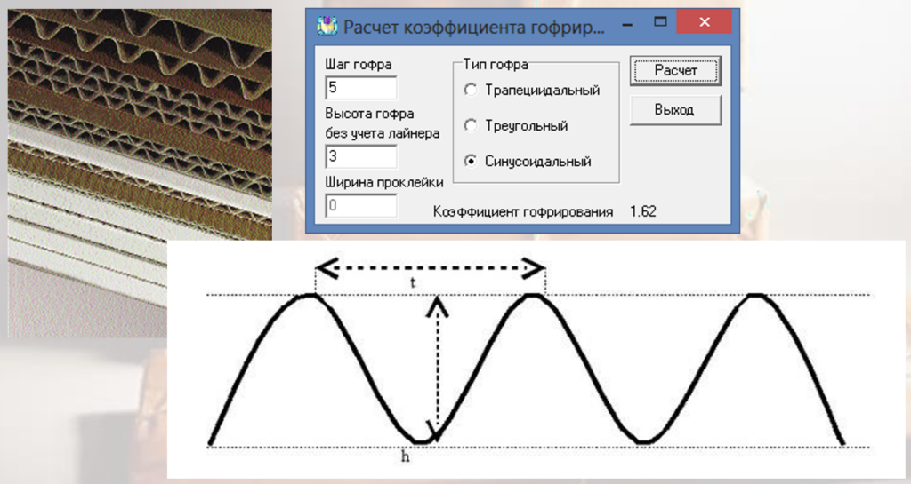
Программа «ПОЯС» позволяет вести учёт сырьевых материалов и
рассчитать стоимость заказа с выбранным сырьём.
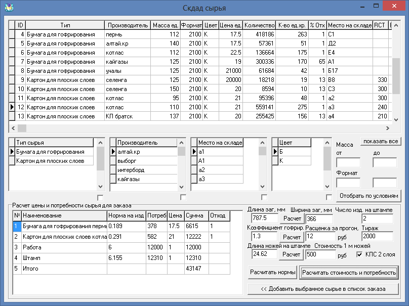
В специальном модуле программы «ПОЯС» можно привязать имеющееся сырьё к маркам и сортам гофрокартона.
Это необходимо для определения базовой композиции сырья при расчёте предельной нагрузки ящика. А также для определения стоимости 1 кв. метра гофрокартона.
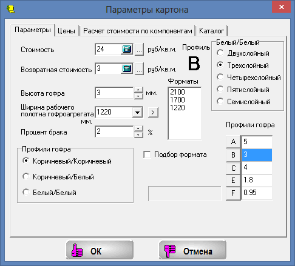
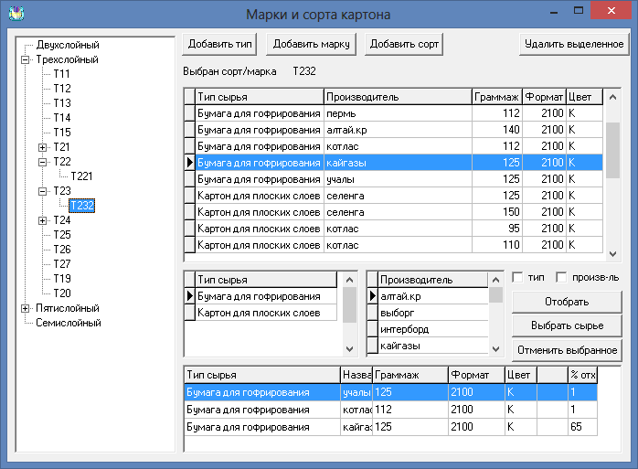
Программа позволяет создать эскиз дизайна гофроящика, нанести упаковочные знаки и штрих-код EAN-13
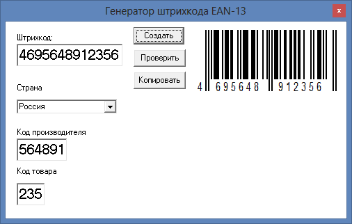
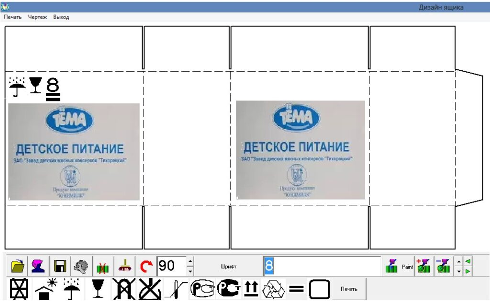
Программа «ПОЯС» установлена на таких предприятиях, как
Программа «ПОЯС» успешно применялась для решения задач таких компаний, как
• Фабрика «Свобода» (г. Москва.)
• Невская Косметика (г. Санкт-Петербург)
• Останкинский молочный комбинат (г. Москва)
• Униливер (г. Москва)
• И десятков других предприятий России и СНГ.
Подборка публикаций по ПОЯС и расчетам групповой тары, упаковки, укладки и себестоимости.
Selected publications on POJAS, group packaging, packing optimization and packaging cost calculations.
Актуальный каталог из 31 конструкции. На каждой карточке показаны объёмный вид и развёртка.
The current catalog includes 31 box styles. Each card shows a 3D view and dieline.
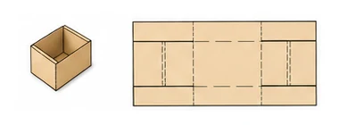
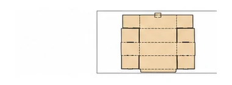
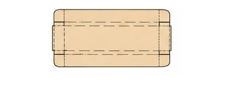
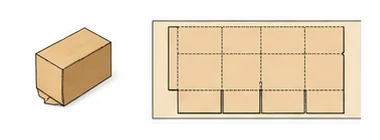
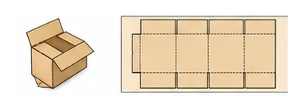
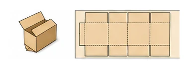
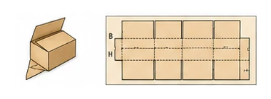
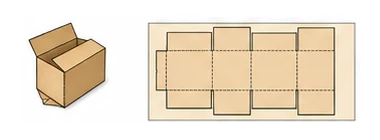
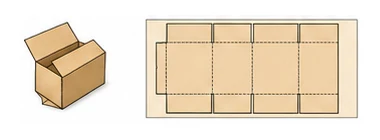
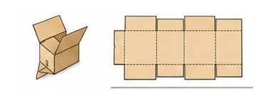
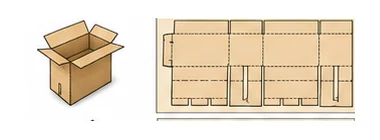
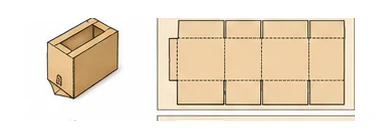
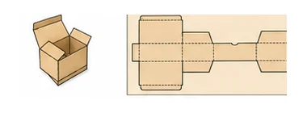
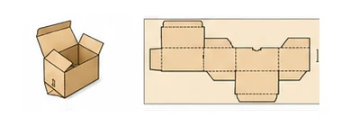
Каталог отражает перечень конструкций, поддерживаемых в актуальной версии программы на сегодня.
This catalog reflects the box styles supported by the current release today.
Лицензия подготавливается для конкретного компьютера. Выполните шесть шагов, чтобы получить персональный дистрибутив.
Загрузите pc-settings-detector.zip.
Распакуйте архив и запустите программу на компьютере, для которого приобретается лицензия.
Скопируйте код оборудования, показанный программой.
Переведите согласованную сумму на карту 5536914068135833 с пометкой «Оплата программы ПОЯС» и укажите ИНН для получения чека.
Направьте название программы, код оборудования и дату транзакции на vguberniev@gmail.com.
После проверки платежа ссылка на программу для указанного компьютера придёт ответным письмом.
Мультиязычный интерфейс
Multilingual interface
В комплект входят десять готовых словарей, включая поддержку письма справа налево для иврита.
Ten ready-to-use interface dictionaries are included, with right-to-left support for Hebrew.


Напишите, какие задачи упаковки нужно считать: раскрой, ящики, ГОСТы, транспорт, склад сырья или комплексное внедрение. Можно обсудить демонстрацию, перенос данных и доработки под производство.
Tell us which packaging tasks you need to calculate: cutting, boxes, standards, transport, raw material stock or a complete deployment. We can discuss a demo, data migration and custom production logic.